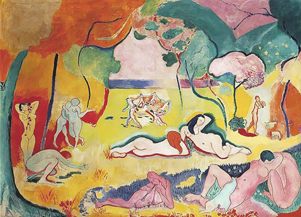
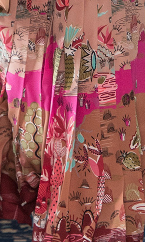

Playing ♩ ♪ ♬ "Méditation des enfants" by Alain Goraguer
For my thesis I'm creating a collection of 12 pieces of home fabrics for high end market. The theme of my collection is a surrealistic, apocalyptic fantasy world. It's gonna have an artsy, 70's psychedelic vibe in contemporary way.
Some images from my mood board:
One of the places I'm using as reference for my design:


Most of my inspirations come from the French animation films Fantastic Planet and Le Tableau.